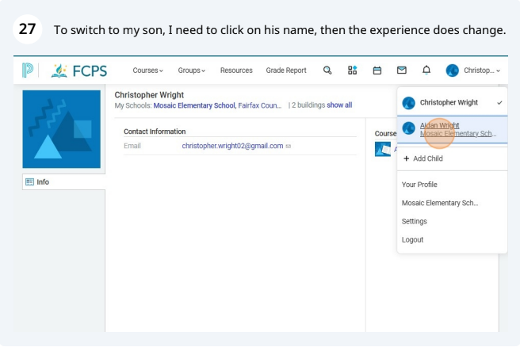

Nina-Simone Edwards, Christopher Wright, Sushema Jammi, Claire Garney, Lindsey Perez
LSC 555; Prof. Oh
Final Project
Fairfax County Public Schools (FCPS) is our client for this system analysis of the Learning Management System (LMS) Schoology. FCPS wants an external evaluation of Schoology due to complaints from all day-to-day users (teachers, parents, and students) about the usability of the platform. They have also requested feedback that can be forwarded to Schoology to make improvements to the platform for future usage. Complaints have centered primarily on the complexity of the interface for young students, the lack of flexibility in the platform for parents and teachers, and the consistent need for support from third party sources like librarians. As the analysis progressed, we limited the scope of this project to only include parents and students. Although we were able to get general teacher input, the analysis was restricted to the view of students and parents given the level of access granted.
“As a school librarian, I see the potential of Schoology as a learning management system, but it often feels like the library’s role gets lost in the shuffle. The platform could do a better job of integrating library resources. Our students are familiar with the system at this point, but we were getting so many questions and comments about library resources being difficult to access through Schoology that we now just direct them to our library website, which we’ve found to be much more user-friendly for students and parents.” - FCPS, HS Librarian
"I find Schoology can be overwhelming for younger students. While it has great features, it would be much more effective if the interface was simplified for different age groups. Additionally, integrating more interactive, kid-friendly tools would help engage our younger learners and make accessing library resources easier for them." – FCPS, Elementary Librarian
"As a (high school) English teacher, I appreciate the organization that Schoology offers, but I wish it provided more flexibility, particularly for sharing content and grading, and integrating external resources. Additionally, the constant notifications (for assignments, messages, minor changes, etc.) are distracting. The system is not immune to technical glitches, often being down or extremely slow to load.” – FCPS, HS English Teacher
Schoology
is a LMS that enables blended learning and is one of the cloud-based features offered by
PowerSchool. The LMS "can be used to assign, assess, and collaborate in and out of school, no matter the type of devices students are using or where they are learning" (Personalized Learning, 2025, p. 7). Schoology connects students, faculty, and parents to assignments, messaging, calendars, curriculum, and course templates. It contains data on student strengths and areas for growth that can be helpful for students, families, and teachers. It has automatic syncing and passback of attendance, traditional grades, and standards-based grades. Teachers can also use Schoology to source content for instruction, assignments, and assessments.
Schoology can be connected to other PowerSchool features to create a customizable document management system they refer to as a Student Management System (SMS), or Student Information System (SIS). This is a centralized, integrated data platform for secure data storage, management, and access. “This software system manages information for schools, and it often protects student, staff, and family data. An SMS or SIS can help with scheduling along with other resources and tools that schools need to maintain an accurate and useful database around their student body and daily operations” (PowerSchool, 2025, n.p.). PowerSchool’s SMS can connect the LMS to assessment information such as student performance data from local benchmarks, state assessments, third-party diagnostic assessments or data sets, attendance, behavior, and live transactional data such as surveys.
Librarians can use a LMS to promote existing services such as reference desk help, research consultations, one-shot instruction sessions, for-credit courses, and the library website. A librarian’s reference work is supported by the use of a LMS because the instructor can endorse the librarian as an information expert, research assistance can be provided online where a student may be more comfortable, and allows the librarian to market their services. Similar to other instructors, librarians can use the LMS to provide synchronous and asynchronous lessons, follow up on questions in a discussion board, link to resources, and provide instructions on relevant research strategies. A LMS can enhance a library’s website as well. Students may have trouble navigating the catalog or determining which database or other resources are most appropriate. A librarian can streamline the list of databases and finding tools relevant to a course or assignment in the LMS.

| Strengths | Weaknesses |
|---|---|
| Schoology enables a general intuitive navigation where users can use recognition rather than recall. This is supported by good internal consistency in its visual elements like fonts and layout. | For parents, there is limited user control/freedom as well as help/documentation to allow for unencumbered use of the information system. Many of the key elements are obscured from the parent view. |
| There is flexibility and efficiency for users who are able to toggle between different profiles and straightforward navigation across the site. | For students, there is limited flexibility/efficiency and also user control/freedom. Students do not have the ability to customize their view, which could limit their ability to use the information system or interact and engage in a consistent manner. |
We suggest that Schoology develops Focus Groups (to include students, teachers, and parents) to seek to better understand actual user needs and preferences and gather quantitative data while identifying real-life pain points.
Schoology is a useful, fairly intuitive system for students and parents, but teachers and the school system could have better consistency in standards (which would, hopefully, mean providing more information to students and parents.)
Anecdotes and our research indicated a general dislike of the system’s inflexibility (to tailor views) and general lack of parents’ ability to engage with the system.
Hopefully, by utilizing feedback from focus groups , Schoology can make improvements to enable the system to better serve its clientele.
PowerSchool. (2025, February 28). A brief guide to choosing a student management system. PowerSchool. https://www.powerschool.com/blog/choosing-a-student-management-system/.
PowerSchool. (2024, April 18). Personalized education for every journey: An interactive flow chart. PowerSchool. http://387-sbg-541.mktoweb.com/rs/powerschoolmarketo00/images/Beginners_Guide_to_Personalized_Learning.
Tumbleson, B.E. & Burke, J.J. (2013). Embedding librarianship in Learning Management Systems: A how-to-do-it manual for librarians, American Library Association. http://ebookcentral.proquest.com/lib/gmu/detail.action?docID=1636017.